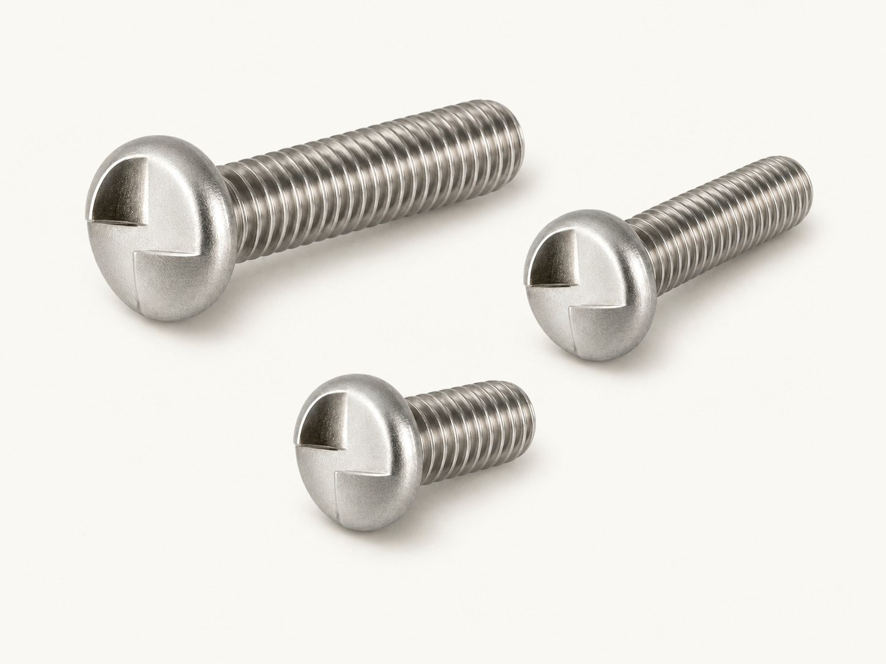

One-Way Security Screws
Round-head one-way screws install with a properly fitted flat-blade driver. Their ramped drive resists ordinary reverse engagement, making them suitable where routine removal is not expected. Compare zinc-plated steel machine and sheet-metal configurations below.

Sizes & part numbers
Select a part number to start a quote. Catalog listings are reference configurations; availability is confirmed with your inquiry.
Round-head one-way machine screws - steel, zinc plated (23)
| Part number | Thread size | Length (in.) |
|---|---|---|
| 1R6C050SZ#6-32 × 1/2″ Round Head One-Way Machine Screw, Steel, Zinc Plated | #6-32 | 1/2 |
| 1R6C075SZ#6-32 × 3/4″ Round Head One-Way Machine Screw, Steel, Zinc Plated | #6-32 | 3/4 |
| 1R6C100SZ#6-32 × 1″ Round Head One-Way Machine Screw, Steel, Zinc Plated | #6-32 | 1 |
| 1R6C150SZ#6-32 × 1-1/2″ Round Head One-Way Machine Screw, Steel, Zinc Plated | #6-32 | 1-1/2 |
| 1R8C050SZ#8-32 × 1/2″ Round Head One-Way Machine Screw, Steel, Zinc Plated | #8-32 | 1/2 |
| 1R8C075SZ#8-32 × 3/4″ Round Head One-Way Machine Screw, Steel, Zinc Plated | #8-32 | 3/4 |
| 1R8C100SZ#8-32 × 1″ Round Head One-Way Machine Screw, Steel, Zinc Plated | #8-32 | 1 |
| 1R8C125SZ#8-32 × 1-1/4″ Round Head One-Way Machine Screw, Steel, Zinc Plated | #8-32 | 1-1/4 |
| 1R8C150SZ#8-32 × 1-1/2″ Round Head One-Way Machine Screw, Steel, Zinc Plated | #8-32 | 1-1/2 |
| 1R10C050SZ#10-24 × 1/2″ Round Head One-Way Machine Screw, Steel, Zinc Plated | #10-24 | 1/2 |
| 1R10C075SZ#10-24 × 3/4″ Round Head One-Way Machine Screw, Steel, Zinc Plated | #10-24 | 3/4 |
| 1R10C100SZ#10-24 × 1″ Round Head One-Way Machine Screw, Steel, Zinc Plated | #10-24 | 1 |
| 1R10C150SZ#10-24 × 1-1/2″ Round Head One-Way Machine Screw, Steel, Zinc Plated | #10-24 | 1-1/2 |
| 1R10F050SZ#10-32 × 1/2″ Round Head One-Way Machine Screw, Steel, Zinc Plated | #10-32 | 1/2 |
| 1R10F075SZ#10-32 × 3/4″ Round Head One-Way Machine Screw, Steel, Zinc Plated | #10-32 | 3/4 |
| 1R10F100SZ#10-32 × 1″ Round Head One-Way Machine Screw, Steel, Zinc Plated | #10-32 | 1 |
| 1R10F150SZ#10-32 × 1-1/2″ Round Head One-Way Machine Screw, Steel, Zinc Plated | #10-32 | 1-1/2 |
| 1R25C050SZ1/4-20 × 1/2″ Round Head One-Way Machine Screw, Steel, Zinc Plated | 1/4-20 | 1/2 |
| 1R25C075SZ1/4-20 × 3/4″ Round Head One-Way Machine Screw, Steel, Zinc Plated | 1/4-20 | 3/4 |
| 1R25C100SZ1/4-20 × 1″ Round Head One-Way Machine Screw, Steel, Zinc Plated | 1/4-20 | 1 |
| 1R25C150SZ1/4-20 × 1-1/2″ Round Head One-Way Machine Screw, Steel, Zinc Plated | 1/4-20 | 1-1/2 |
| 1R25C200SZ1/4-20 × 2″ Round Head One-Way Machine Screw, Steel, Zinc Plated | 1/4-20 | 2 |
| 1R25C300SZ1/4-20 × 3″ Round Head One-Way Machine Screw, Steel, Zinc Plated | 1/4-20 | 3 |
Source: Screw & Supply catalog, page 30. Confirm current availability and exact configuration when ordering.
Round-head one-way sheet-metal screws - steel, zinc plated (31)
| Part number | Screw size | Length (in.) |
|---|---|---|
| 1R6A037SZ#6 × 3/8″ Round Head One-Way Sheet-Metal Screw, Steel, Zinc Plated | #6 | 3/8 |
| 1R6A050SZ#6 × 1/2″ Round Head One-Way Sheet-Metal Screw, Steel, Zinc Plated | #6 | 1/2 |
| 1R6A062SZ#6 × 5/8″ Round Head One-Way Sheet-Metal Screw, Steel, Zinc Plated | #6 | 5/8 |
| 1R6A075SZ#6 × 3/4″ Round Head One-Way Sheet-Metal Screw, Steel, Zinc Plated | #6 | 3/4 |
| 1R6A100SZ#6 × 1″ Round Head One-Way Sheet-Metal Screw, Steel, Zinc Plated | #6 | 1 |
| 1R8A037SZ#8 × 3/8″ Round Head One-Way Sheet-Metal Screw, Steel, Zinc Plated | #8 | 3/8 |
| 1R8A050SZ#8 × 1/2″ Round Head One-Way Sheet-Metal Screw, Steel, Zinc Plated | #8 | 1/2 |
| 1R8A075SZ#8 × 3/4″ Round Head One-Way Sheet-Metal Screw, Steel, Zinc Plated | #8 | 3/4 |
| 1R8A100SZ#8 × 1″ Round Head One-Way Sheet-Metal Screw, Steel, Zinc Plated | #8 | 1 |
| 1R8A125SZ#8 × 1-1/4″ Round Head One-Way Sheet-Metal Screw, Steel, Zinc Plated | #8 | 1-1/4 |
| 1R8A150SZ#8 × 1-1/2″ Round Head One-Way Sheet-Metal Screw, Steel, Zinc Plated | #8 | 1-1/2 |
| 1R8A200SZ#8 × 2″ Round Head One-Way Sheet-Metal Screw, Steel, Zinc Plated | #8 | 2 |
| 1R10A050SZ#10 × 1/2″ Round Head One-Way Sheet-Metal Screw, Steel, Zinc Plated | #10 | 1/2 |
| 1R10A075SZ#10 × 3/4″ Round Head One-Way Sheet-Metal Screw, Steel, Zinc Plated | #10 | 3/4 |
| 1R10A100SZ#10 × 1″ Round Head One-Way Sheet-Metal Screw, Steel, Zinc Plated | #10 | 1 |
| 1R10A125SZ#10 × 1-1/4″ Round Head One-Way Sheet-Metal Screw, Steel, Zinc Plated | #10 | 1-1/4 |
| 1R10A150SZ#10 × 1-1/2″ Round Head One-Way Sheet-Metal Screw, Steel, Zinc Plated | #10 | 1-1/2 |
| 1R10A200SZ#10 × 2″ Round Head One-Way Sheet-Metal Screw, Steel, Zinc Plated | #10 | 2 |
| 1R12A050SZ#12 × 1/2″ Round Head One-Way Sheet-Metal Screw, Steel, Zinc Plated | #12 | 1/2 |
| 1R12A075SZ#12 × 3/4″ Round Head One-Way Sheet-Metal Screw, Steel, Zinc Plated | #12 | 3/4 |
| 1R12A100SZ#12 × 1″ Round Head One-Way Sheet-Metal Screw, Steel, Zinc Plated | #12 | 1 |
| 1R12A125SZ#12 × 1-1/4″ Round Head One-Way Sheet-Metal Screw, Steel, Zinc Plated | #12 | 1-1/4 |
| 1R12A150SZ#12 × 1-1/2″ Round Head One-Way Sheet-Metal Screw, Steel, Zinc Plated | #12 | 1-1/2 |
| 1R12A200SZ#12 × 2″ Round Head One-Way Sheet-Metal Screw, Steel, Zinc Plated | #12 | 2 |
| 1R25A050SZ#14 × 1/2″ Round Head One-Way Sheet-Metal Screw, Steel, Zinc Plated | #14 | 1/2 |
| 1R25A075SZ#14 × 3/4″ Round Head One-Way Sheet-Metal Screw, Steel, Zinc Plated | #14 | 3/4 |
| 1R25A100SZ#14 × 1″ Round Head One-Way Sheet-Metal Screw, Steel, Zinc Plated | #14 | 1 |
| 1R25A150SZ#14 × 1-1/2″ Round Head One-Way Sheet-Metal Screw, Steel, Zinc Plated | #14 | 1-1/2 |
| 1R25A200SZ#14 × 2″ Round Head One-Way Sheet-Metal Screw, Steel, Zinc Plated | #14 | 2 |
| 1R25A250SZ#14 × 2-1/2″ Round Head One-Way Sheet-Metal Screw, Steel, Zinc Plated | #14 | 2-1/2 |
| 1R25A300SZ#14 × 3″ Round Head One-Way Sheet-Metal Screw, Steel, Zinc Plated | #14 | 3 |
Source: Screw & Supply catalog, page 30. Confirm current availability and exact configuration when ordering.
One-way screw removal tools (3)
| Part number | Catalog-listed screw sizes |
|---|---|
| SSTM06-8One-Way Screw Removal Tool for #4, #6, #8 screws | #4, #6, #8 screws |
| SSTM10-12One-Way Screw Removal Tool for #10, #12 screws | #10, #12 screws |
| SSTM14One-Way Screw Removal Tool for #14, 5/16″, 3/8″ screws | #14, 5/16", 3/8" screws |
Source: Screw & Supply catalog, page 10. Confirm current availability and exact configuration when ordering.
Common questions
- Do one-way screws need a special installation tool?
- They normally install with a properly fitted flat-blade driver. Confirm blade fit and access for the specific head.
- Can one-way screws be removed?
- Removal may require a specialized tool or another planned method. Decide how the assembly will be serviced before specifying an install-only drive.
- Which removal tool should I order?
- The table lists SSTM tool ranges from the catalog. Suitability also depends on the head condition and access; send the screw part number or photo to confirm fit.
- Which material and finish are listed?
- The screw configurations below are steel with a zinc-plated finish. Sizes are in inches; machine-thread and sheet-metal forms are listed separately.
- Can you review custom sizes or materials?
- Yes. Send a drawing or sample information with the thread, length, head style, material, finish, quantity, and any documentation requirements. We offer custom-manufactured fasteners with competitive minimum order quantities.
Where install-only fastening is useful
- Transit, Rail & Signage →
Used on signage and equipment tags exposed to public access.
- Machinery Guarding & Panels →
Secures guards and covers not intended for routine removal.
- Public Restrooms & Partitions →
Resists casual tampering with fixtures and partitions in public spaces.
- Detention & Institutional →
Used on fixtures where install-only fastening supports a secure environment.
- Utility & Infrastructure →
Fits outdoor utility fixtures exposed to public access.
- Amusement & Fitness Equipment →
Used on public-use equipment where casual disassembly is undesirable.